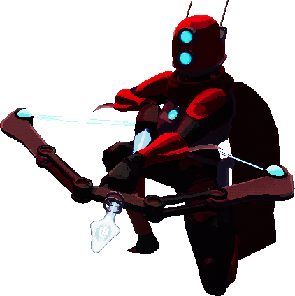

Hello!!
My name is April and I really like the game Risk of Rain 2. So I have made this website, which provides details about some of my favorite item combinations in the game.
Questions you may have for me
- What is Risk of Rain 2?
-
Risk of Rain 2 (or ROR2 for short) is a roguelike
third person shooter made by Hopoo Games and published
by Gearbox Publishing. It takes place on a fictional
planet called Petrichor V, where you play as a survivor
on a planet where everything is trying to kill you.
The basic gameplay consists of killing aliens to get money, then using that money to open chests, which contain randomized items of varying degrees of rarity. Depending on which items you pick up, you can gain stat bonuses or a variety of effects that drastically change the nature of your playthrough. It is a roguelike game, which means that when you die, all your progress and items are lost and you start each run from scratch.
- How are ROR2 and ROR different?
- ROR2 is a third person shooter, whereas the first installment of the game, Risk of Rain, is a side scrolling platformer. They are similar in many ways, each containing many of the same items and survivors, but each version varies slightly in both the items available and their effects.
- Why did I choose this topic for the project?
-
I figured this project would be easier if I picked
a topic I'm already familiar with. I could talk about ROR2
for hours, so the choice was obvious.
In hindsight, I should have picked something I didnt care as much about so I wasted less time doing things that don't matter and just finished the assignment.
